Amor
ספרדית לדוברי אנגלית עם לולה התוכית: שיעורים, דיבור וסיפוריםLearn Spanish with Lola the parrot: lessons, speaking and stories
🛍️ חנות האפליקציות של Magmanet🛍️ The Magmanet App Store
375 אפליקציות אנדרואיד ללמידה, לילדים, למוזיקה, לכושר ולחיים עצמם. מורידים, מתקינים ומתחילים.375 Android apps for learning, kids, music, fitness and everyday life. Download, install, enjoy.
ספרדית לדוברי אנגלית עם לולה התוכית: שיעורים, דיבור וסיפוריםLearn Spanish with Lola the parrot: lessons, speaking and stories
כל שאלות התיאוריה, תרגול חכם שמתמקד בטעויות ומבחנים מדומיםPass Israel's driving theory test: all pool questions and smart practice
לומדים איטלקית עם שירים מקוריים, שיעורים קצרים ויונה שרהLearn Italian through original songs, short lessons and a singing pigeon
לדעת מה מותר מול שוטר – ולהישאר רגועיםKnow your rights with Israeli police – and stay calm
הכנה למבחני מיון ממוחשבים: אבחון, תרגול חשיבה, סימולציות וראיוןPrep for computerized screening tests: diagnostic, practice, interview
הדף של היום, הטקסט מספריא, וההתקדמות שלכם במחזור.Today's daf, the text from Sefaria, and your progress through the cycle.
אוצר מילים וביטויים בספרדית, צרפתית, גרמנית ואיטלקית, בכמה דקות ביוםBite-sized daily vocabulary in Spanish, French, German and Italian
מעבדת כימיה וירטואלית: ניסויים, מולקולות וניסוחים.A virtual chemistry lab: experiments, molecules and equations.
בונים חידון משלכם ומשחקים בו – בכיתה, בבית ובכל מסיבהMake your own quiz and play it – in class, at home, at any party
הכנה חינמית לפסיכומטרי – מילולי, כמותי, אנגלית וכתיבהFree psychometric test prep – verbal, quantitative, English and writing
מאכילים, מלבישים ומפנקים את מיצי החתולה, מנהלים פיצרייה וטסים לעולםFeed and dress up Mitzi the cat, run her pizzeria and travel the world
מצלמים סלפי במראה ומקבלים דמות מצוירת משלכם, עם סטיקרים וריקודיםTurn a mirror selfie into your own cartoon avatar, stickers and dances
משחקי מוטוריקה ותרגול נהיגה לילדים ולמבוגרים עם דיספרקסיהMotor-skill games and learner-driver practice for dyspraxia (DCD)
מרהטים בית בובות חמים, מזיזים את המשפחה ומשחקים בדמיון – בלי אינטרנטFurnish a cozy doll house, move the family around and play pretend – offline
מברישים, קולעים צמות ומאכילים את הפוני, מנקים את האורווה ויוצאים לרכיבה!Brush, braid and feed your pony, clean the stable and ride gentle trails!
גינה קסומה ונעימה שגדלה בזמן אמת: כמה דקות רגועות ביום.A cozy magic garden that grows in real time: a few calm minutes a day.
מתחפשים בסוד, צועדים על המסלול ומריעים לכולם! מסיבה ל־2–8 טלפוניםDress up in secret, walk the runway, cheer for everyone! A party for 2–8 phones
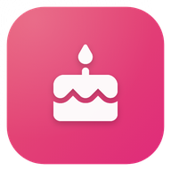
אופים, מקשטים ומגישים מאפים מתוקים ללקוחות חמודים. בלי פרסומות!Bake, decorate and serve sweet treats to cute animal customers. No ads!
מעצבים בגדים, מלבישים דוגמנים ודוגמניות ועולים למסלול בתצוגת אופנה משלכם!Design clothes, dress diverse models and put on your own runway show!
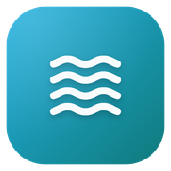
יוצרים בת ים, שוחים, עוזרים לחברים בים ושומרים על הים נקי. בלי פרסומות!Create your mermaid, swim, help sea friends and keep the ocean clean. No ads!
טריוויה, משחקי האזנה ומשחקי חברים לכל מי שגדל על המוזיקה של שנות ה-80Fact-based trivia, listening games and party play for fans of 80s music
לומדים גיטרה צעד אחר צעד, עם שיעורים שמקשיבים לכם מנגניםLearn guitar step by step with lessons that listen to you play
טאבים ותווים אינטראקטיביים לגיטרה, בס, יוקלילי ותופיםInteractive tabs for guitar, bass, ukulele and drums, with mic play-along
שמיעה מוזיקלית וקול מדויק, כל יוםSharper ears and a truer voice, every day
מטרונום, צלילי כיוון, אימון שמיעה ויומן תרגול במקום אחדMetronome, reference tones, ear training and a practice log in one app
אקורדים לכל שיר, תוך שניותChords for any song, in seconds
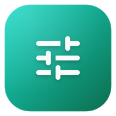
סינתיסייזר שלם שזוהר בכיסA whole synthesizer, glowing in your pocket
מקישים לקצב. מדליקים את הלילה.Tap to the music. Light up the night.
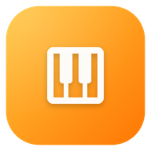
מכונת ביטים בכיס, עם דום ותקA beat machine in your pocket, doum and tek included
שרים, מזמזמים ורואים את התוויםSing it. Hum it. See the notes
12 חידות היגיון, מספרים ומילים, סט יומי ורמזים שמלמדים איך לפתורTwelve logic, number and word puzzles, a Daily Set and hints that teach
מוצאים את המילה הסודית לפי המשמעות – וכל ניחוש מראה כמה התקרבתםFind the secret word by meaning: every guess shows how close you are
250 אתגרים ל-2 עד 8 חברים: בוחרים, משחקים, נותנים ציונים ומכתירים מנצח250 challenges for 2-8 friends: play, score each other, crown a winner
12 משחקים מקוריים ברוח המחשבים הביתיים הראשונים12 original games in the spirit of the first home computers
כמה טוב החברים באמת מכירים אתכם?How well do your friends really know you?
תרגילי ריכוז, תגובה ויד יציבה לנהגים גרועים – מצחיק, קצר ובלי אינטרנטFunny focus, reaction and steady-hand drills for bad drivers – short and offline
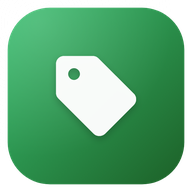
משחק יומי: נחשו מחירים אמיתיים מהסופר וגלו איפה הכי זולDaily game: guess real supermarket prices, learn where it's cheapest
חמש אותיות, שישה ניסיונות, מילה אחת ביום.Five letters, six guesses, one word a day.
חמש חידות אימוג'י ביום. תצליחו לפענח?Five emoji riddles a day. Can you read them?
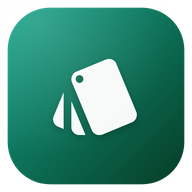
לומדים אסטרטגיה בסיסית וספירת קלפים, בכסף משחק בלבדMaster basic strategy and card counting with play money only
רושמים סטים, שוברים שיאים ורואים את ההתקדמותLog your sets, beat your records, see your progress
שקט ושמחה מבפנים, בלי תלות במשהו חיצוניCalm and joy from within, without depending on anything outside
כמה דקות של שקט – עם הנחיה, טיימר או תרגיל נשימהA few calm minutes – guided, timed or breathing
רגע ביום לעצור, להרגיש ולכתוב – באופן פרטי לגמריA moment a day to check in and reflect – privately
תוכנית אימונים שבועית שבאמת עוקבים אחריהPlan your training week and actually stick to it
מצלמים טקסט – ושומעים אותו, בעברית ובאנגליתPoint the camera – and hear the text, in Hebrew and English
מתעדים את הלילות ומבינים מה באמת משפיע על השינהLog your nights and learn what really affects your sleep
צעדים, קריאה, מים או כל יעד – מתחרים או משיגים יחדSteps, reading, water or any goal – compete or achieve it together
יומן פרטי, רק בטלפון שלכם.A private journal, on your phone only.
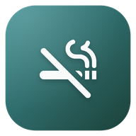
ליווי עדין לגמילה, יום אחד בכל פעם.A kind companion for quitting, one day at a time.
המתודה הנכונה לתוצאה שאתם רוצים מהקהל, מותאמת לתוכן שלכם.The right facilitation method for the result you want from your audience, applied to your content.
מתרכזים בפרצים קצרים, נחים בזמן ומספיקים יותרFocus in short bursts, rest on time, get more done
לוקחים 3 ימי חופשה, מקבלים 9 ימי חופש – גשרים חכמים.Take 3 vacation days, get 9 off – smart holiday bridges.
קניות, ציוד לטיול ומי מביא מה – רשימה אחת לכל החבורהShopping, packing and who-brings-what – one list for the whole group
הקופה של הבניין, שקופה לכל הדיירים.The building's books, open to every resident.
לוחות רגועים לכל פרויקט, מהר יותר מנייר.Calm boards for every project, faster than paper.
מי נוהג היום, בלי עוד הודעה בקבוצה.Who's driving today, without another group message.
כותבים משימה במשפט אחד – והאפליקציה מבינה את השארType a task in plain words – the app handles the rest
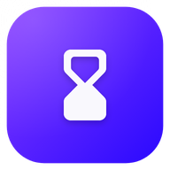
סופרים את הימים לרגעים הגדולים – ואת הימים מאזCount down to big moments – or count up from them
להחליט בראש צלול.Decide with a clear head.
הדרך למיליון: הון נקי, תקציב, רעיונות להכנסה ושיעורים על כסףPlan your path to a million: net worth, budget, income ideas and lessons
מי חייב למי – בכמה שפחות העברותWho owes whom, in the fewest transfers
ברוטו, נטו, מס וזכויות – לפי חוקי 2026Gross, net, tax and rights – by 2026 rules
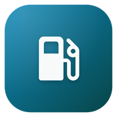
כמה עולה הנסיעה, ואיך מתחלקים – בלי ויכוחיםWhat the trip costs, and how to split it – no arguments
כמה לשים בצ'ק – בלי מבוכהHow much to give – without the awkwardness
תקציב מעטפות: לכל שקל יש תפקידEnvelope budgeting that gives every dollar a job
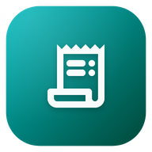
רושמים הוצאות ורואים לאן הכסף הולךLog spending and see where your money goes
10 המניות שירדו ו-10 שעלו הכי הרבה בסגירה האחרונהThe 10 biggest decliners and gainers at the last close
איפה הסל שלכם הכי זול? השוואת מחירים בסופרמרקטיםWhere is your basket cheapest? Supermarket price comparison
כל כרטיסי המתנה והשוברים בארנק פרטי אחד.Every gift card and voucher in one private wallet.
ניהול סטודיו ליוגה ולכושר: מערכת שעות, מתאמנים, מנויים ותשלומיםRun your yoga or fitness studio: classes, students, memberships, payments
מתמחרים עבודות שיפוץ ושולחים הצעת מחיר PDF מקצועית בעבריתPrice renovation jobs and send professional Hebrew PDF quotes
הצעות מחיר, תעודות משלוח ודרישות תשלום שנראות כמו עסק אמיתי.Quotes, delivery notes and payment requests that look like a real business.
יומן תורים, לקוחות והכנסות לעסק קטן.Appointments, clients and income for a small business.
כל הצוות מעודכן, בלי עוד ישיבהThe whole team in sync, without another meeting
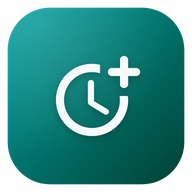
השעות, הלקוחות ומה שמגיע לך, רק בטלפון שלך.Your hours, your clients and what you are owed, on your phone only.
רגיל, מדעי, מתכנתים וגרפים – מחשבון אחד לכל דבר.Standard, scientific, programmer and graphing – one calculator for everything.
מודלים תלת־ממדיים פרמטריים בטאבלט, עד הדפסה או כרסוםParametric 3D modeling on your tablet, from sketch to print or mill
תאריך עברי, חגים, זמני היום ושבת – בלי אינטרנט.Hebrew date, holidays, zmanim and Shabbat – offline.
מכתבים רשמיים, בשפה פשוטה.Official letters, in plain language.
סיסמאות חזקות, צירופי מילים וקודי PIN – הכול נוצר במכשירStrong passwords, passphrases and PINs – generated on your device
סורקים ויוצרים קודי QR וברקודים, עם בדיקת בטיחות לקישוריםScan and create QR codes and barcodes, with link safety checks
רואים איפה המשפחה והחברים – רק מי שבחר לשתף, ומוצפן מקצה לקצהSee where family and friends are – only those who chose to share, end-to-end encrypted
סכמו את השנה שלכם באימוג׳ים ושתפוSum up your year in emojis and share it
הופכים לחתול, לאריה או לחד־קרן – בהקשה אחת!Become a cat, a lion or a unicorn – in one tap!
מקישים פעם אחת כשחונים – ומוצאים את הרכב בקלותOne tap when you park – find your car easily
מדפי קריאה, סריקת ברקוד, זמני קריאה ויעד שנתיReading shelves, barcode scanning, reading sessions and a yearly goal
מתכונים, מצב בישול עם טיימרים, תכנון ארוחות ורשימת קניותRecipes, cooking mode with timers, meal planning and a shopping list
דלק, טיפולים, עלויות ותזכורות – לכל הרכבים שלכםFuel, services, costs and reminders for all your vehicles
ציטוט מעורר השראה בכל יום, עם מועדפים, אוספים ושיתוףAn inspiring quote every day, with favorites, collections and sharing
שגרה יומית, חיסונים, תרופות ומשקל – הבריאות של חיית המחמדDaily routines, vaccines, meds and weight for your pet's health
כל רשימות הציוד של הילדים – ורשימת קניות אחת לחנותAll your kids' supplies lists – and one shopping list for the store
הרבה טיימרים במטבח, בבת אחתMany kitchen timers at once
מעבר דירה רגוע, שבוע אחרי שבוע: משימות, ארגזים, מובילים ופריקה.A calm move, week by week: tasks, boxes, movers and unpacking.
תפריט, קניות ומי מביא מה – לשבת ולחג, בלי לחץMenu, shopping and who brings what – for Shabbat and holidays, stress-free
הקשה אחת ביום, והמשפחה רואה.One tap a day, and the family can see it.
מקישים, צובעים, נרגעים. פיקסל ארט צבע אחרי צבע.Tap, fill, relax. Pixel art one colour at a time.
סטודיו לצבעים למעצבים, לאמנים וליוצרים.A colour studio for designers, artists and makers.
עורך תמונות יפהפה שכל מה שבו נשאר בטלפון.A beautiful photo editor that keeps everything on your phone.
חול, אבן ונשימה איטית.Sand, stone and a slow breath.
דיו, נייר ויד רגועה. אות אחר אות.Ink, paper and a calm hand. One letter at a time.
המלווה שלכם לסריגה ולסריגה בקרושYour knitting and crochet companion
ממים עם טקסט בעברית שנראה נכוןMemes with Hebrew text that actually looks right
סטודיו לאנימציה מצוירת ביד: שכבת בצל, ציר זמן ו-GIF בלחיצה.A hand-drawn animation studio: onion skin, a timeline and GIFs in a tap.
אובניים שקטים, חימר רך ותנור שמפתיע בכל פעם.A quiet wheel, soft clay and a kiln that surprises you every time.
מחברת סקיצות רצינית לציור מודל חי, לשיעורי אמנות ולתרגול.A serious sketch pad for life drawing, art lessons and practice.
כל טיול, מצויר כמו מפה.Every hike, drawn like a map.
לקרוא את השמיים, קומה אחר קומה.Read the sky, floor by floor.
תופסים את האור הכי יפה, כל יום.Catch the best light, every day.
מכוונים לשמיים. פוגשים את הכוכבים.Point at the sky. Meet the stars.
פרחי הבר של ישראל, חודש אחר חודש.The wildflowers of Israel, month by month.
כל ציפור שראיתם, במקום אחד.Every bird you see, in one place.
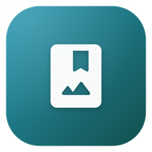
כותבים את הטיול ביחד, יום אחרי יוםWrite the trip together, day by day
מזג האוויר עכשיו, תחזית שעתית ותחזית ל־10 ימיםCurrent conditions, hourly outlook and a 10-day forecast
מאכילים, מלבישים ומפנקים את מיצי החתולה, מנהלים פיצרייה וטסים לעולםFeed and dress up Mitzi the cat, run her pizzeria and travel the world
12 חידות היגיון, מספרים ומילים, סט יומי ורמזים שמלמדים איך לפתורTwelve logic, number and word puzzles, a Daily Set and hints that teach
מצלמים סלפי במראה ומקבלים דמות מצוירת משלכם, עם סטיקרים וריקודיםTurn a mirror selfie into your own cartoon avatar, stickers and dances
הדרך למיליון: הון נקי, תקציב, רעיונות להכנסה ושיעורים על כסףPlan your path to a million: net worth, budget, income ideas and lessons
ספרדית לדוברי אנגלית עם לולה התוכית: שיעורים, דיבור וסיפוריםLearn Spanish with Lola the parrot: lessons, speaking and stories
ניהול סטודיו ליוגה ולכושר: מערכת שעות, מתאמנים, מנויים ותשלומיםRun your yoga or fitness studio: classes, students, memberships, payments
טריוויה, משחקי האזנה ומשחקי חברים לכל מי שגדל על המוזיקה של שנות ה-80Fact-based trivia, listening games and party play for fans of 80s music
מוצאים את המילה הסודית לפי המשמעות – וכל ניחוש מראה כמה התקרבתםFind the secret word by meaning: every guess shows how close you are
כל שאלות התיאוריה, תרגול חכם שמתמקד בטעויות ומבחנים מדומיםPass Israel's driving theory test: all pool questions and smart practice
לומדים גיטרה צעד אחר צעד, עם שיעורים שמקשיבים לכם מנגניםLearn guitar step by step with lessons that listen to you play
טאבים ותווים אינטראקטיביים לגיטרה, בס, יוקלילי ותופיםInteractive tabs for guitar, bass, ukulele and drums, with mic play-along
לומדים איטלקית עם שירים מקוריים, שיעורים קצרים ויונה שרהLearn Italian through original songs, short lessons and a singing pigeon
משחקי מוטוריקה ותרגול נהיגה לילדים ולמבוגרים עם דיספרקסיהMotor-skill games and learner-driver practice for dyspraxia (DCD)
250 אתגרים ל-2 עד 8 חברים: בוחרים, משחקים, נותנים ציונים ומכתירים מנצח250 challenges for 2-8 friends: play, score each other, crown a winner
12 משחקים מקוריים ברוח המחשבים הביתיים הראשונים12 original games in the spirit of the first home computers
רגיל, מדעי, מתכנתים וגרפים – מחשבון אחד לכל דבר.Standard, scientific, programmer and graphing – one calculator for everything.
שמיעה מוזיקלית וקול מדויק, כל יוםSharper ears and a truer voice, every day
מרהטים בית בובות חמים, מזיזים את המשפחה ומשחקים בדמיון – בלי אינטרנטFurnish a cozy doll house, move the family around and play pretend – offline
המתודה הנכונה לתוצאה שאתם רוצים מהקהל, מותאמת לתוכן שלכם.The right facilitation method for the result you want from your audience, applied to your content.
מברישים, קולעים צמות ומאכילים את הפוני, מנקים את האורווה ויוצאים לרכיבה!Brush, braid and feed your pony, clean the stable and ride gentle trails!
גינה קסומה ונעימה שגדלה בזמן אמת: כמה דקות רגועות ביום.A cozy magic garden that grows in real time: a few calm minutes a day.
לדעת מה מותר מול שוטר – ולהישאר רגועיםKnow your rights with Israeli police – and stay calm
מתחפשים בסוד, צועדים על המסלול ומריעים לכולם! מסיבה ל־2–8 טלפוניםDress up in secret, walk the runway, cheer for everyone! A party for 2–8 phones
מודלים תלת־ממדיים פרמטריים בטאבלט, עד הדפסה או כרסוםParametric 3D modeling on your tablet, from sketch to print or mill
כמה טוב החברים באמת מכירים אתכם?How well do your friends really know you?
אופים, מקשטים ומגישים מאפים מתוקים ללקוחות חמודים. בלי פרסומות!Bake, decorate and serve sweet treats to cute animal customers. No ads!
תרגילי ריכוז, תגובה ויד יציבה לנהגים גרועים – מצחיק, קצר ובלי אינטרנטFunny focus, reaction and steady-hand drills for bad drivers – short and offline
מעצבים בגדים, מלבישים דוגמנים ודוגמניות ועולים למסלול בתצוגת אופנה משלכם!Design clothes, dress diverse models and put on your own runway show!
יוצרים בת ים, שוחים, עוזרים לחברים בים ושומרים על הים נקי. בלי פרסומות!Create your mermaid, swim, help sea friends and keep the ocean clean. No ads!
משחק יומי: נחשו מחירים אמיתיים מהסופר וגלו איפה הכי זולDaily game: guess real supermarket prices, learn where it's cheapest
חמש אותיות, שישה ניסיונות, מילה אחת ביום.Five letters, six guesses, one word a day.
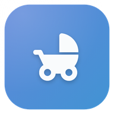
יום שלם ומתוק עם התינוק שלכם.A whole sweet day with your very own baby.
חמש חידות אימוג'י ביום. תצליחו לפענח?Five emoji riddles a day. Can you read them?
מקלחים, מייבשים, מסרקים ומלבישים חיות חמודות במספרה משלכם!Wash, dry, brush, trim and dress up cute animals in your own pet salon!
מי חייב למי – בכמה שפחות העברותWho owes whom, in the fewest transfers
הכנה למבחני מיון ממוחשבים: אבחון, תרגול חשיבה, סימולציות וראיוןPrep for computerized screening tests: diagnostic, practice, interview
מדפי קריאה, סריקת ברקוד, זמני קריאה ויעד שנתיReading shelves, barcode scanning, reading sessions and a yearly goal
רושמים סטים, שוברים שיאים ורואים את ההתקדמותLog your sets, beat your records, see your progress
הדף של היום, הטקסט מספריא, וההתקדמות שלכם במחזור.Today's daf, the text from Sefaria, and your progress through the cycle.
מטרונום, צלילי כיוון, אימון שמיעה ויומן תרגול במקום אחדMetronome, reference tones, ear training and a practice log in one app
לומדים אסטרטגיה בסיסית וספירת קלפים, בכסף משחק בלבדMaster basic strategy and card counting with play money only
מתכונים, מצב בישול עם טיימרים, תכנון ארוחות ורשימת קניותRecipes, cooking mode with timers, meal planning and a shopping list
שקט ושמחה מבפנים, בלי תלות במשהו חיצוניCalm and joy from within, without depending on anything outside
כמה דקות של שקט – עם הנחיה, טיימר או תרגיל נשימהA few calm minutes – guided, timed or breathing
דלק, טיפולים, עלויות ותזכורות – לכל הרכבים שלכםFuel, services, costs and reminders for all your vehicles
ברוטו, נטו, מס וזכויות – לפי חוקי 2026Gross, net, tax and rights – by 2026 rules
תאריך עברי, חגים, זמני היום ושבת – בלי אינטרנט.Hebrew date, holidays, zmanim and Shabbat – offline.
לומדים ברידג׳ חוזים: הכרזה, משחק ידיים והגנהLearn contract bridge: bidding, declarer play and defense
חבר ידידותי שגורם לילדים לדבר אנגלית: שיחות, סיפורים ומשחקיםA friendly buddy that gets kids talking English: chats, stories, games
רגע ביום לעצור, להרגיש ולכתוב – באופן פרטי לגמריA moment a day to check in and reflect – privately
תוכנית אימונים שבועית שבאמת עוקבים אחריהPlan your training week and actually stick to it
מתרכזים בפרצים קצרים, נחים בזמן ומספיקים יותרFocus in short bursts, rest on time, get more done
ציטוט מעורר השראה בכל יום, עם מועדפים, אוספים ושיתוףAn inspiring quote every day, with favorites, collections and sharing
שגרה יומית, חיסונים, תרופות ומשקל – הבריאות של חיית המחמדDaily routines, vaccines, meds and weight for your pet's health
אמת או חובה נקי וכיפי לכל החבר׳הThe clean truth-or-dare for the whole gang
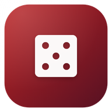
לומדים אסטרטגיית פוקר צעד אחר צעד, בלי כסף אמיתיLearn winning poker strategy step by step, no real money
אקורדים לכל שיר, תוך שניותChords for any song, in seconds
מכתבים רשמיים, בשפה פשוטה.Official letters, in plain language.
720 שאלות ב-12 קטגוריות, אתגר יומי, מצבי משחק לחברים וטבלאות שיאים720 questions in 12 categories, a daily challenge, party modes and leaderboards
לוקחים 3 ימי חופשה, מקבלים 9 ימי חופש – גשרים חכמים.Take 3 vacation days, get 9 off – smart holiday bridges.
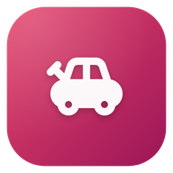
12 סוגי פאזלים צבעוניים ומשחקי חשיבה שגדלים יחד עם הילד12 colorful puzzle games that grow with your child
מצלמים טקסט – ושומעים אותו, בעברית ובאנגליתPoint the camera – and hear the text, in Hebrew and English
חידות שחמט סביב הקרבות מבריקות וכל טקטיקה אחרת – כל מסע נבדקChess puzzles built around brilliant sacrifices, every line verified
כמה עולה הנסיעה, ואיך מתחלקים – בלי ויכוחיםWhat the trip costs, and how to split it – no arguments
סיסמאות חזקות, צירופי מילים וקודי PIN – הכול נוצר במכשירStrong passwords, passphrases and PINs – generated on your device
מתמחרים עבודות שיפוץ ושולחים הצעת מחיר PDF מקצועית בעבריתPrice renovation jobs and send professional Hebrew PDF quotes
בוחרים גיבור, מקום וחבר, ומקבלים סיפור לפני השינה חדש ומאויר, בהקראהPick a hero, a place and a friend: a new illustrated bedtime story, read aloud
הילדים מסמנים מטלות, אוספים כוכבים וחוסכים לפרסים שאתם קובעים. בלי פרסומות!Kids tap chores done, earn stars and save up for rewards you set. No ads!
סורקים ויוצרים קודי QR וברקודים, עם בדיקת בטיחות לקישוריםScan and create QR codes and barcodes, with link safety checks
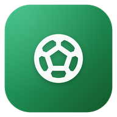
ליגת ניחושי כדורגל פרטית עם החברים – בלי כסף, רק כבודA private football prediction league with friends – no money, just bragging rights
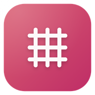
מספרים נכנסים, ציור יוצא. פאזלי היגיון צבעוניים ורגועים.Numbers in, pictures out. Calm, colourful logic puzzles.
מקישים, צובעים, נרגעים. פיקסל ארט צבע אחרי צבע.Tap, fill, relax. Pixel art one colour at a time.
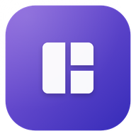
פאזל בלוקים רגוע וצבעוניA calm, colourful block puzzle
מתעדים את הלילות ומבינים מה באמת משפיע על השינהLog your nights and learn what really affects your sleep
אוצר מילים וביטויים בספרדית, צרפתית, גרמנית ואיטלקית, בכמה דקות ביוםBite-sized daily vocabulary in Spanish, French, German and Italian
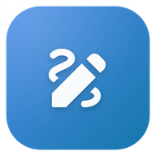
לומדים לכתוב אותיות בעברית ובאנגלית ומספרים עם האצבע. כוכבים, בלי פרסומות!Trace Hebrew & English letters and numbers with a finger. Stars, no ads!
מי הכי...? סקר יומי אנונימי ומצחיק לחבר׳הWho's most likely to...? A funny anonymous daily poll for your group
כמה לשים בצ'ק – בלי מבוכהHow much to give – without the awkwardness
שרים, שואגים, לוחשים ומתופפים בדרך לפודיום!Sing, roar, whisper and beatbox your way to the podium!
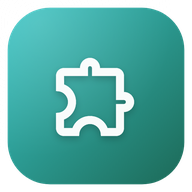
פאזלים מרגיעים עם תמונות יפות – מ־9 ועד 400 חלקיםRelaxing jigsaw puzzles with beautiful pictures – 9 to 400 pieces
תקציב מעטפות: לכל שקל יש תפקידEnvelope budgeting that gives every dollar a job
כותבים, מציירים, מנחשים… ורואים איך הכול משתבש!Write, draw, guess… and watch it all go wrong!
רושמים הוצאות ורואים לאן הכסף הולךLog spending and see where your money goes
כל רשימות הציוד של הילדים – ורשימת קניות אחת לחנותAll your kids' supplies lists – and one shopping list for the store
רואים איפה המשפחה והחברים – רק מי שבחר לשתף, ומוצפן מקצה לקצהSee where family and friends are – only those who chose to share, end-to-end encrypted
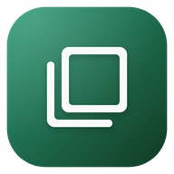
קלונדייק, ספיידר, פריסל ועוד – קלפים גדולים וברוריםKlondike, Spider, FreeCell and more – big, clear cards
צעדים, קריאה, מים או כל יעד – מתחרים או משיגים יחדSteps, reading, water or any goal – compete or achieve it together
סכמו את השנה שלכם באימוג׳ים ושתפוSum up your year in emojis and share it
מחברים את הצבעים וממלאים את הלוח – ברוגעConnect the colours, fill the board – calmly
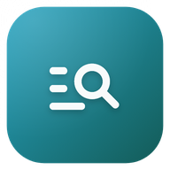
מצאו את המילים החבויות. תפזורת חדשה בכל יום.Find the hidden words. A new grid every day.
מתאימים שלושה אריחים חמודים ומנקים את הלוח – ברוגעMatch three cute tiles and clear the board – calmly
חמש שאלות ביום על מה שקרה בתאריך הזהFive questions a day about what happened on this date
מסתכלים טוב – ומוצאים את כל החפצים המוסתרים!Look closely and find every hidden thing!
קניות, ציוד לטיול ומי מביא מה – רשימה אחת לכל החבורהShopping, packing and who-brings-what – one list for the whole group
מוזגים, ממיינים, נושמים. פאזל צבעוני ורגוע.Pour, sort, breathe. A calm, colourful puzzle.
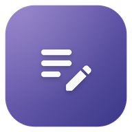
כל יום סיפור חדש – כל אחד מוסיף משפט אחדA new story every day – everyone adds one sentence
הופכים לחתול, לאריה או לחד־קרן – בהקשה אחת!Become a cat, a lion or a unicorn – in one tap!
מ־0 ₪ וטלפון אחד לאימפריהFrom ₪0 and a phone to an empire
מקום אחד ביום. מצאו אותו על מפת ישראל.One place a day. Find it on the map of Israel.
מקישים פעם אחת כשחונים – ומוצאים את הרכב בקלותOne tap when you park – find your car easily
כמה טוב אתם באמת מכירים?How well do you two really know each other?
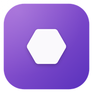
מערמים, מחליקים ומנקים משושים צבעוניים – ברוגעStack, slide and clear calm, colourful hexagons
מעבדת כימיה וירטואלית: ניסויים, מולקולות וניסוחים.A virtual chemistry lab: experiments, molecules and equations.
מקליטים את הקול והופכים אותו לסנאי, לרובוט, לחייזר…Record your voice and turn it into a chipmunk, a robot, an alien…
תירוץ מצחיק לכל מצב. נערו בשביל עוד אחד!A funny excuse for every situation. Shake for a new one!
סטודיו לצבעים למעצבים, לאמנים וליוצרים.A colour studio for designers, artists and makers.
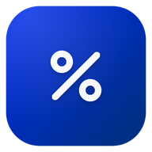
שאלונים מצחיקים על החיים בישראלFunny, kind quizzes about Israeli life
מרכיבים מילים, מנצחים מפלצות ומחזירים את המילים לארץ אלפבית.Spell words, defeat monsters and bring the words back to Alefbet.
הרבה טיימרים במטבח, בבת אחתMany kitchen timers at once
הצעות מחיר, תעודות משלוח ודרישות תשלום שנראות כמו עסק אמיתי.Quotes, delivery notes and payment requests that look like a real business.
ממטוס קטן אחד לחברת תעופה שמקיפה את העולםFrom one small plane to an airline that circles the world
מעבר דירה רגוע, שבוע אחרי שבוע: משימות, ארגזים, מובילים ופריקה.A calm move, week by week: tasks, boxes, movers and unpacking.
משחק בלשים משפחתי שבו לכל אחד יש רמזים אחרים, ורק ביחד פותרים את התעלומה.A family whodunit where everyone holds different clues, and only together can you crack the case.
לומדים להקליד בעברית ובאנגלית בלי להסתכל על המקלדתLearn to type in Hebrew and English without looking
עורך תמונות יפהפה שכל מה שבו נשאר בטלפון.A beautiful photo editor that keeps everything on your phone.
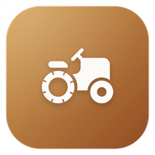
שדות, מטעים, חדר אוכל וכל החגים. חיי משק נעימים בקיבוץ.Fields, orchards, a dining hall and every holiday. A cozy farm life on the kibbutz.
חול, אבן ונשימה איטית.Sand, stone and a slow breath.
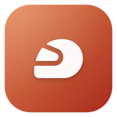
חול, חצץ, סלע ומלח: ראלי אמיתי מתחת לשמש של המדברSand, gravel, rock and salt: a real rally under the desert sun
תפריט, קניות ומי מביא מה – לשבת ולחג, בלי לחץMenu, shopping and who brings what – for Shabbat and holidays, stress-free
חפרו למטה דרך שבע שכבות אל הלב הזוהר של העולם.Dig down through seven layers to the glowing heart of the world.
הרפתקת תעלומה בעיר נמל עתיקה.A point-and-click mystery in an old port town.
מאירים לסירות את הדרך הביתה, לילה אחרי לילהLight the way home, night after night
10 המניות שירדו ו-10 שעלו הכי הרבה בסגירה האחרונהThe 10 biggest decliners and gainers at the last close
בונים חידון משלכם ומשחקים בו – בכיתה, בבית ובכל מסיבהMake your own quiz and play it – in class, at home, at any party
הרשתות החברתיות שלכם במקום אחד.Your social networks in one place.
הקופה של הבניין, שקופה לכל הדיירים.The building's books, open to every resident.
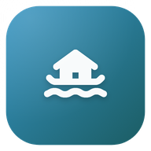
הישרדות נעימה על שרשרת איים: לאסוף, ליצור ולמצוא את הדרך הביתה.Cosy island survival: gather, craft and find your way home.
יומן פרטי, רק בטלפון שלכם.A private journal, on your phone only.
מסע רגוע מהשונית אל התעלה העמוקה ביותר.A calm journey from the reef to the deepest trench.
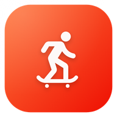
הקשה לאולי, החלקה לפליפ, ונחיתה על המעקה: סקייטבורד שמרגישים באצבעותTap to ollie, swipe to flip, land on the rail: skateboarding you feel in your fingers
שעון שחמט וטיימר תורות לכל משחק לוח.A chess clock and a turn timer for every board game.
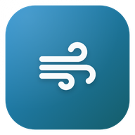
רגטת שייט ברוח אמיתית.A sailing regatta on a real wind.
החליקו, סובבו והגישו בדרך לפסגת הסבב.Swipe, spin and serve your way up a sunset tour.
דיו, נייר ויד רגועה. אות אחר אות.Ink, paper and a calm hand. One letter at a time.
הקשה אחת ביום, והמשפחה רואה.One tap a day, and the family can see it.
אחרי הגשם הראשון, סירת נייר קטנה שטה כל הדרך אל הים.After the first rain, a little paper boat sails all the way to the sea.
ספינה קטנה, הלוואה גדולה, גזרה שלמה של הזדמנויותA small ship, a big loan, a whole sector of chances
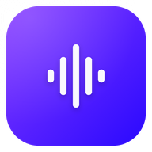
מזמזמים כדי לעוף. שרים כדי לזהור.Hum to fly. Sing to shine.
13 משחקי חשיבה לגילאי 5–7, עם הוראות קוליות ובלי צורך לקרוא13 thinking games for ages 5-7, spoken aloud so no reading is needed
המלווה שלכם לסריגה ולסריגה בקרושYour knitting and crochet companion
משאית אוכל משלכם בעיר שמש על חוף הים.Your own food truck in a sunny seaside city.
אסטרטגיית הגנה צבעונית כמו ספר תמונות: צמחים נגד מזיקי גינה.A picture-book defense strategy game: garden plants against garden pests.
לוחות רגועים לכל פרויקט, מהר יותר מנייר.Calm boards for every project, faster than paper.
מעבדה שלמה בכיס: משערים, בודקים ומגלים איך העולם עובד.A whole lab in your pocket: guess, test and discover how the world works.
הכנה חינמית לפסיכומטרי – מילולי, כמותי, אנגלית וכתיבהFree psychometric test prep – verbal, quantitative, English and writing
מקפלים, זורקים וגולשים בין חדרי הבית.Fold, throw and glide through a cozy house.
מהליגה הכי נמוכה ועד הפסגה. המועדון שלכם, הדרך שלכם.From the bottom division to the top. Your club, your way.
שגרת ערב ובוקר עם טיימר מדבר, כוכבים ומדבקותBedtime and morning routines with a talking timer, stars and stickers
כל טיול, מצויר כמו מפה.Every hike, drawn like a map.
בנו פארק חיות בר שאכפת לו.Build a caring wildlife park.
הסדרות והסרטים שלך: מה הפרק הבא, מה ראית וכמה.Your series and movies: what's next, what you watched, and how much.
סינתיסייזר שלם שזוהר בכיסA whole synthesizer, glowing in your pocket
13 קטגוריות של יחידות, שערי מטבע עדכניים וממיר למטבח13 unit categories, up-to-date currency rates and a kitchen converter
תקופת הליווי, יומן הנסיעות והתרגול, לנהגים חדשים ולהורים.The escort period, the drive log and the practice, for new drivers and their parents.
ממים עם טקסט בעברית שנראה נכוןMemes with Hebrew text that actually looks right
סטודיו לאנימציה מצוירת ביד: שכבת בצל, ציר זמן ו-GIF בלחיצה.A hand-drawn animation studio: onion skin, a timeline and GIFs in a tap.
איפה הסל שלכם הכי זול? השוואת מחירים בסופרמרקטיםWhere is your basket cheapest? Supermarket price comparison
לקרוא את השמיים, קומה אחר קומה.Read the sky, floor by floor.
מקישים לקצב. מדליקים את הלילה.Tap to the music. Light up the night.
גיבור דיו קטן בספר סקיצות גדול.A little ink hero in a big sketchbook.
כמה טוב המשפחה מכירה אחד את השני?How well does your family really know each other?
מסך בית גדול וברור להורים שלכם.A big, clear home screen for your parents.
דיג רגוע במים של ישראלCalm fishing in Israeli waters
אובניים שקטים, חימר רך ותנור שמפתיע בכל פעם.A quiet wheel, soft clay and a kiln that surprises you every time.
מי נוהג היום, בלי עוד הודעה בקבוצה.Who's driving today, without another group message.
עולם קטן של מים לעצב ולגדל.A little world of water to design and grow.
חפיסה אחת, פנס אחד, שלוש קומות של חושךOne deck, one lantern, three floors of dark
חמשת אלפים שנות היסטוריה, החלקה אחר החלקה.Five thousand years of history, one swipe at a time.
משחק האבנים הקלאסי על שולחן עץ, רגוע ובלי לחץ.The classic tile game on a wooden table, calm and unhurried.
מכביש אחד לעיר שלמהFrom one road to a whole town
אטלס אינטראקטיבי של גוף האדם, עם סיורים וחידונים.An interactive human body atlas, with tours and quizzes.
שמיים רגועים. מסלולים עמוסים.Calm skies. Busy runways.
שנה נעימה של דבורים, פרחים ודבש.A cosy year of bees, flowers and honey.
גלישה שקטה במורד הר מושלג.A calm ride down a snowy mountain.
כל כרטיסי המתנה והשוברים בארנק פרטי אחד.Every gift card and voucher in one private wallet.
מירוץ שלבים באופניים בין ההרים והמדבריות של הארץ.A cycling stage race across the hills and deserts of the land.
כותבים משימה במשפט אחד – והאפליקציה מבינה את השארType a task in plain words – the app handles the rest
טקסס הולדם עם חברים – כל אחד בטלפון שלוTexas Hold'em with friends – everyone on their own phone
ליווי עדין לגמילה, יום אחד בכל פעם.A kind companion for quitting, one day at a time.
מסתכלים טוב ומוצאים את כל ההבדלים!Look closely and find every difference!
חמישה שולחנות. כדור כסף אחד.Five tables. One silver ball.
לומדים את לוח הכפל במרוץ! לבד, מול אח או אחות, או על שני טלפוניםRace to learn your times tables! Solo, with a sibling, or on two phones
מכונת ביטים בכיס, עם דום ותקA beat machine in your pocket, doum and tek included
גולף אמיתי בשלושה מגרשים: חוף, מדבר ויער אורנים.Real golf on three seaside, desert and pine courses.
לא שוכחים להשקות: תזכורות השקיה ודישון לכל צמח בביתNever forget to water: watering and feeding reminders for every plant
תנו לכבידה לצייר את המסלול.Let gravity draw your path.
סופרים את הימים לרגעים הגדולים – ואת הימים מאזCount down to big moments – or count up from them
להחליט בראש צלול.Decide with a clear head.
יומן תורים, לקוחות והכנסות לעסק קטן.Appointments, clients and income for a small business.
חיות חמודות, חטיפים מטופשים, גבעות מתפוררות.Cute critters, silly snacks, crumbly hills.
לחשוב בענפים. לכל רעיון יש מקום.Think in branches. Every idea finds its place.
לומדים לקרוא עם ניקוד – מאותיות ועד סיפוריםLearn to read Hebrew with niqqud – from letters to stories
שש־בש על לוח עץ – מול המחשב או עם חברBackgammon on a wooden board – vs the computer or a friend
לומדים כל דבר עם כרטיסיות וחזרה מרווחת חכמהLearn anything with spaced-repetition flashcards
תופסים את האור הכי יפה, כל יום.Catch the best light, every day.
מכוונים לשמיים. פוגשים את הכוכבים.Point at the sky. Meet the stars.
רצפים, קבוצות ושולחן משותף אחדRuns, groups and one shared table
לומדים ספרדית עם שירים מקוריים ולולה התוכית, מעברית או מאנגליתLearn Spanish through original songs with Lola the parrot
ימי הולדת, תזכורות ואיסוף כסף למתנה – בלי בלגןBirthdays, reminders and collecting for a gift – no chaos
ספירה לאחור לשחרור – לחיילים ולמשפחותCountdown to release day – for soldiers and families
ניקוד לערב משחקים ולחצרScores for game night and the backyard
הטלפון הוא השופט של משחקי החצר, ואתם רצים, מתחבאים וקופאים באמת.The phone referees real playground games while the kids run, hide and freeze.
שתי אמיתות ושקר אחד – מי יגלה?Two truths, one lie – who'll spot it?
לשמור על הכדור באוויר. ביחד.Keep the ball in the air. Together.
בונים. בודקים. רואים אותו מחזיק.Build it. Test it. Watch it hold.
חמש קוביות, שלוש הטלות, שלוש עשרה משבצותFive dice, three rolls, thirteen boxes
שניים־שניים, הגינה מתעוררת.Two by two, the garden wakes up.
הפסקות מתיחה עדינות ליום מול המחשב.Gentle stretch breaks for your desk day.
פאזל מספרים יומי – עם רמזים שמסביריםA daily number puzzle – with hints that explain
כל העסקאות ברחוב שלכם – מחירים, מגמות ומחיר למ״רEvery deal on your street – prices, trends and price per m²
מכופפים את האור. מעירים את הגבישים.Bend the light. Wake the crystals.
פרחי הבר של ישראל, חודש אחר חודש.The wildflowers of Israel, month by month.
מחשבים טיפ ומתחלקים בחשבון בשניותSplit bills and calculate tips instantly
חמישה סוגים של היגיון טהור. אף פעם לא לנחש.Five kinds of pure logic. Never a guess.
יומן חלומות פרטי לבקרים רגועים.A private dream journal for calm mornings.
שכר דירה וחשבונות – חלוקה הוגנת בין השותפיםRent and bills – split fairly between flatmates
בונים מסלול גולות מעץ, לוחצים על הפעלה וצופים בהן מתגלגלות.Build a wooden marble run, press play, watch it roll.
בודקים בעצמכם אם מגיע לכם כסף ממס הכנסהFind out if the tax office owes you money
מניחים מסילות, לוחצים "יוצאים", וכל רכבת מגיעה הביתה.Lay the tracks, press Go, watch every train get home.
תראו איך תיראו זקנים, תינוקות או גיבורי על – בכיףSee yourself old, as a baby or a superhero – just for fun
כל ציפור שראיתם, במקום אחד.Every bird you see, in one place.
יותר או פחות? משחק מספרים על ישראלHigher or lower? A numbers game about Israel
לקרוא מהר יותר ולזכור יותר, כמה דקות ביום.Read faster, remember more, a few minutes a day.
חתול נעים, מחסן שקט, ארגזים לסדר.A cosy cat, a quiet warehouse, crates to tidy.
תרגול לבחינות האנגלית אמיר ואמירם.Practice for the Amir and Amiram English exams.
משחק בישול שיתופי לילדים: כל טלפון הוא חלק מהמטבח.A co-op cooking game for kids: every phone is part of the kitchen.
נחשו את המשוואה של היום בשישה ניסיונותGuess today's equation in six tries
כל הצוות מעודכן, בלי עוד ישיבהThe whole team in sync, without another meeting
מחברת סקיצות רצינית לציור מודל חי, לשיעורי אמנות ולתרגול.A serious sketch pad for life drawing, art lessons and practice.
המרק של סבתא, העוגה של הדודה: כל המתכונים של המשפחה בספר אחד.Grandma's soup, the aunt's cake: the whole family's recipes in one book.
מגרילים גמד וענק – בלי שאף אחד יציץDraw Secret Santa – without anyone peeking
דואגים יחד להורה או לקרוב משפחהCaring for a parent together
16 מילים, 4 קבוצות – תמצאו את הקשר16 words, 4 groups – find the link
הצרפתית של הבית – גם בקריאה ובכתיבה.The French spoken at home, now in reading and writing too.
שרים, מזמזמים ורואים את התוויםSing it. Hum it. See the notes
עץ המשפחה שכל המשפחה בונה ביחד.The family tree the whole family builds together.
כל הזיכרונות של החבר׳ה – במקום אחדAll of the gang's memories – in one place
מכתבים לעצמכם העתידי, סגורים עד התאריך.Letters to your future self that stay sealed until the date.
בונים מפלצות חמודות ונלחמים בכיף עם חברים, גם בלי אינטרנט.Build cute monsters and battle your friends, even without internet.
אנגלית יומיומית לחיים האמיתיים, 10 דקות ביום.Everyday English for real life, 10 minutes a day.
מה שיש לשכנים – בהשאלה, בחינםWhat your neighbors own – to borrow, for free
תשעה משחקי נסיעה לכל המשפחה, בטלפון אחד.Nine car games for the whole family, on one phone.
המילים הנכונות לרגעים שחשובים.The right words for the moments that matter.
כל ימי המילואים, התשלומים והזכויות במקום אחדYour reserve days, payments and rights in one place
חדר בריחה משפחתי שבו כל טלפון רואה רמזים אחרים, והדיבור הוא המשחק.A family escape room where every phone sees different clues, and talking is the game.
מארגנים טורניר עם החברים: עץ נוקאאוט, ליגה, בתים וסטטיסטיקות.Run a tournament with friends: brackets, leagues, groups and stats.
נחשו את השיר מתוך אימוג׳ים – חמישה בכל יוםGuess the song from emojis – five a day
כל החשבון של בית הספר היסודי, בקצב של הילד.All of elementary school math, at your child's pace.
מה ממלא את הטלפון, ומה אפשר למחוק בלי לדאוג.What fills your phone, and what you can safely remove.
כל טלפון הוא כלי נגינה. ביחד אתם להקה!Every phone is an instrument. Together you're a band!
לומדים ביחד, גם כשכל אחד בביתFocus together, even from home
מיני גולף מקורי לכל המשפחה: 5 מסלולים, 45 גומות, ומשחק יחד בטלפון אחד או בכמה טלפונים.Original mini golf for the whole family: 5 courses, 45 holes, play on one phone or several.
מנחשים כל שבוע עם החברים, ורואים מי צדקPredict every week with friends, see who called it
חברים מארחים, חברים מדרגים, שולחן אחד מנצח.Friends host, friends score, one table wins.
משחק חברה לאירועים, למשרד ולסופי שבוע: לכל אחד מטרה סודית ומשימה מצחיקה, והאחרון שנשאר מנצח.A party game for events, offices and weekends: everyone has a secret target and a silly mission, and the last agent standing wins.
לומדים את העולם על מפה ריקה.Learn the world on a blank map.
עברית לחיים בישראל, מהאות הראשונה ועד הבנק.Hebrew for life in Israel, from the first letter to the bank.
מחלקים את הלימוד בין חברים ומשלימים יחדShare the reading among friends and complete it together
עובדות משעשעות על החיים שלכם, ואבני הדרך שבדרך.Fun, shareable facts about your life and its milestones.
מתגלגלים, צובעים, ממלאים – הכי הרבה צבע מנצח!Roll, paint, fill – the most color wins!
משחק מסיבה של מגדל מתנדנד עם פיזיקה אמיתית, לכל המשפחה.A wobbly-tower party game with real physics for the whole family.
כל אחד מוסיף פעם אחת, וכולם זוכרים תמידEveryone adds theirs once, everybody remembers
מורס בשמיעה, תו אחרי תו, עד שזה נשמע כמו שפה.Morse by ear, one character at a time, until it sounds like a language.
יוצאים לצוד תמונות – קבוצה מול קבוצהGo hunting for photos – team against team
הרגל אחד, כמה חברים, שרשרת אחתOne habit, a few friends, one chain
ערבית מדוברת, עשר דקות ביום.Spoken Levantine Arabic, ten minutes a day.
הזמנת אוכל משותפת – בלי בלגן בקבוצהOne food order for the whole group – no chat chaos
קוראים יחד, מדברים בלי ספוילרים.Read together, talk without spoilers.
הזמנות יפות למסיבה בדקה, ואישורי ההגעה נספרים בשבילכם.Beautiful party invitations in a minute, and the replies counted for you.
כל 118 היסודות, תרגול וכלים לכימיה.All 118 elements, quizzes and chemistry tools.
עושים מטלות, חוסכים, וקונים בעצמכם!Do chores, save up, buy it yourself!
הטעויות הנפוצות בעברית, ואיך אומרים נכון.The common mistakes in Hebrew, and how to get them right.
המשחק הקלאסי של אות וקטגוריות, עם בדיקת תשובות והצבעה, על כמה טלפונים ביחד.The classic letters-and-categories game, with answer checking and voting, across several phones.
שישה משחקי קליעה לכל המשפחה: מכוונים, מעיפים וקולעים!Six flick-and-aim games for the whole family: aim, flick and hit!
חברים נרשמים לעזור למשפחה, משבצת אחרי משבצת.Friends sign up to help a family, one slot at a time.
טקסטים קצרים לכיתות א׳–ו׳, שאלות לפי מיומנות והקראה בקול.Short Hebrew texts for grades 1–6, questions by skill and read-aloud.
כל חשבונות הבית במקום אחד, וגם מה המונה אומר.All your home bills in one place, and what the meter says.
מכוניות צעצוע מתחרות על השולחן, על השטיח ועל אדן החלון.Toy cars racing on the kitchen table, the rug and the window sill.
הפרטים הרפואיים החשובים שלכם, מוכנים למי שצריך לקרוא אותם.Your important health details, ready for whoever needs to read them.
פלס, סרגל, מד זווית, מד רעש ועוד, גדולים וברורים בטלפון.A level, ruler, protractor, sound meter and more, big and clear on your phone.
מוצאים את הדרך החוצה, מהר מכולם: לבד, בשניים או עם חברים.Find the way out faster than everyone: solo, in pairs or with friends.
מחליטים ביחד, החלקה אחר החלקהDecide together, one swipe at a time
האכלות, חיתולים ושינה במבט אחד, גם בשלוש בלילהFeeds, diapers and sleep at a glance, even at 3 a.m
מתרגלים לבגרות במתמטיקה, צעד אחר צעד.Practise for the math bagrut, step by step.
רשת אותיות, שרשרת מילים ומרוץ ערבובים, לבד או עם כל המשפחה.A letter grid race, a word chain and an anagram race, solo or with the whole family.
13 עולמות של חידות היגיון, מספרים ותכנות לגילאי 7–913 worlds of logic, math and coding puzzles for ages 7-9
לוח המלצות משותף לחבר'ה: מה לראות, לקרוא, לאכול ולטיילA shared board of tips from your friends: what to watch, read, eat and visit
כמה הבגרות שלך שווה בכל אוניברסיטהWhat your bagrut is worth at each university
קלפי שיחה לשולחן המשפחתי: מניחים את הטלפון וכולם מדברים.Conversation cards for the family table: put the phone down and get everyone talking.
שישה משחקי שולחן מהירים לשניים, זה מול זה על טלפון אחד.Six fast table games for two, face to face on one phone.
מאיפה זה בא ומה זה אומר: ניבים ופתגמים בעברית.What it means and where it comes from: Hebrew idioms and proverbs.
שולחן ביליארד אמיתי בכיס: מכות, סיבובים וקרמבולים כמו בחיים.A real pool table in your pocket: shots, spin and kisses just like the real thing.
כרטיסי ברכה יפים לקבוצת המשפחה, מוכנים בדקה.Beautiful greeting cards for the family group, ready in a minute.
מסמך מצולם ל-PDF נקי וחתום, בלי להעלות אותו לשום מקום.From a photo to a clean, signed PDF, without uploading it anywhere.
מדרגים הכול – לבד או עם כל החבר׳הRank anything – alone or with the whole gang
כותבים את הטיול ביחד, יום אחרי יוםWrite the trip together, day by day
מיני־משחקים מהירים של תגובה, מהירות וזיכרון לכל המשפחה, סביב טלפון אחד.Quick reflex, speed and memory mini-games for the whole family, around one phone.
להבין ולהשוות הצעות למשכנתא, במספרים שלכם.Understand and compare mortgage offers, with your own numbers.
שישה משחקי קלפים קלאסיים לילדים, עם חפיסת תמונות וחברים קרובים.Six classic card games for kids, with a picture deck and friends nearby.
מחליקים על שמות, ורואים רק את מה ששניכם אהבתם.Swipe through names and see only the ones you both liked.
יומן וסת פרטי, רק בטלפון שלכם.A private period log, on your phone only.
בינגו למשפחות, כיתות ומועדונים – בלי כסףBingo for families, classrooms and clubs – no money
משחקי המחברת הקלאסיים, עם רובוט חכם ומשחק בין שני טלפונים.The classic notebook games, with a clever robot and play across two phones.
סטייליסטית אישית בכיס: פלטת צבעים, לוקים לכל אירוע והארון שלכםYour pocket stylist: color palette, outfits for every occasion, your closet
הופכים כל תמונה לסטיקר לצ׳אטים עם חברים ומשפחה.Turn any photo into a sticker for chats with friends and family.
שאלה אחת ביום, ביחד.One question a day, together.
מסלול, הזמנות, רשימת אריזה ותקציב משותף לכל טיולItinerary, bookings, packing and a shared budget for every trip
ארבעה משחקי לוח קלאסיים עם קובייה, לשחק יחד על טלפון אחד או על כמה.Four classic dice board games to play together on one phone or several.
מזג האוויר עכשיו, תחזית שעתית ותחזית ל־10 ימיםCurrent conditions, hourly outlook and a 10-day forecast
ערב שעשועון בבית: מסך אחד הוא האולפן, כל טלפון הוא באזרA quiz-show night at home: one screen is the studio, every phone a buzzer
מחמאות אנונימיות לכיתה, לצוות, למשפחה ולחברים.Anonymous compliments for your class, team, family and friends.
כמה אתם באמת משלמים על מנויים, ומה אפשר לבטלWhat your subscriptions really cost, and what to cancel
שבעה משחקי לוח מסורתיים מתרבויות שונות, עם שיעור מונפש ומחשב שמתאים לכל רמה.Seven traditional board games from many cultures, with animated lessons and a computer for every level.
משחק מילים איטי עם חברים – מהלך אחד בכל פעםA slow word game with friends – one move at a time
כולם יודעים איפה הם. חוץ מאחדEveryone knows where they are. Except one
דיבור מופיע בזמן אמת בטקסט ענק, לשיחה עם מי שמתקשה לשמוע.Speech appears live as huge text, for talking with someone hard of hearing.
תזכורת לפני שפג תוקף של דרכון, רישיון או ביטוח, לכל המשפחה.Reminders before passports, licences and insurance expire, for the whole family.
משימת צילום אחת ביום – לכולם אותה משימה.One photo prompt a day – the same for everyone.
המשמרות, השעות והחודש שלכם במקום אחד.Your shifts, your hours, your month.
משחקי מגע עדינים לידיים קטנות, לגילאי 1 עד 4.Gentle tap-and-play for little hands, ages 1 to 4.
המשחק השבועי עם החברים, מסודר.Your weekly game with friends, organized.
תזכורת עדינה להישאר בקשר עם האנשים שחשובים לכם.A gentle nudge to stay close to the people who matter.
משחק אסטרטגיה עדין על איים לילדים ולמשפחות.A gentle island strategy game for kids and families.
מזיזים את המחוגים ולומדים מה השעהTurn the hands and learn to tell the time
כתבו חידון על עצמכם. גלו מי מכיר אתכם הכי טוב.Write a quiz about yourself. See who knows you best.
מחליטים הכול בסיבוב: בהגינות ועם דרמה.Decide anything with a spin: fairly, and with drama.
החוזה, התשלומים ומסירת הדירה, במקום אחד בטלפון.The rental contract, the payments and the handover, in one place on your phone.
מוזמנים, משימות, תקציב והושבה – כל האירוע במקום אחדGuests, tasks, budget and seating – your whole event in one place
ציד אוצרות בבית – חידות, קודי QR ומשימותA treasure hunt at home – riddles, QR codes and challenges
איפה הכי משתלם לקנות מטבע זר לטיולWhere to get the most foreign money for your trip
דברים לעשות ביחד, חלום אחרי חלום.Things to do together, one dream at a time.
שותים מספיק מים – עם יעד אישי ותזכורות עדינותDrink enough water with a personal goal and gentle nudges
מתכונים קלאסיים, טכניקות, הבר שלכם ותחליפים חכמיםClassic recipes, techniques, your home bar and smart substitutions
רשימות קניות חכמות שמסתדרות לבד לפי מחלקות בסופרSmart grocery lists that sort themselves by store aisle
שני משחקי לוח קלאסיים, אפליקציה אחתTwo classic board games, one app
רעיונות, הזמנות וזיכרונות לשניכםIdeas, invitations and memories for the two of you
תארו את המילה בלי להגיד את המילים האסורותDescribe the word without saying the forbidden ones
שני דו־קרבות קלאסיים: צדים את הצי, מסדרים ארבעTwo classic duels: hunt the fleet, line up four
בונים הרגלים טובים, יום אחרי יום, עם רצפים שמדרבניםBuild good habits day by day with motivating streaks
כל סרטוני האימון שאהבתם, במקום אחד – ומוכנים לאימוןSave training videos in one tap, then train with them
הדקות הראשונות אחרי תאונת דרכים, צעד אחר צעד, בלי לחץ.The first minutes after a car accident, one calm step at a time.
ילדים והורים באותו סיבוב – כל אחד עם שאלה בגובה שלוKids and parents in one round – each with a question their size
כמה עולה העוגה – וכמה למכור אותהWhat the cake costs – and what to sell it for
תפקידים סודיים. לילה אחד. מי משקר?Secret roles. One night. Who is lying?
התערבויות והבטחות בין חברים. בלי כסף, רק כבוד.Friendly bets and promises. No money, just honor.
התאימו צבע, מספר או סמל – ותהיו הראשונים להיפטר מהקלפיםMatch colour, number or symbol – and be first to empty your hand
מכוונים, מגדילים, קוראים. כל כך פשוט.Point, zoom, read. That simple.
כל אחד מוסיף חלק – ורק בסוף שומעים את כל הסיפורEveryone adds a part – the whole story comes at the end
מוצאים תאריך שמתאים לכולם.Find a date that works for everyone.
מרוץ חשבון ומילים – כל ילד ברמה שלוA math and word race – every kid at their own level
רוקדים – וכשהמוזיקה נעצרת, פסל!Dance – and when the music stops, freeze!
פתקים מהירים עם תיקיות, תגיות וחיפוש שמוצא הכולQuick notes with folders, tags and search that finds it all
תמצאו כל דבר ששמתם בצד: מקומות, ארגזים, תמונות ותוויות QR.Find anything you put away: places, boxes, photos and QR labels.
הטלפון על המצח – החברים נותנים רמזיםPhone on your forehead – friends give the hints
תזכורות לתרופות של האנשים שאתם דואגים להםMedication reminders for the people you care for
שומעים, רואים ומאייתים – אות אחרי אותHear it, see it, spell it – letter by letter
מציירים, מנחשים וצוחקים ביחדDraw it, guess it, laugh together
מנחשים את התינוק, ביחד.Guess the baby, together.
כל מה שהבית צריך, עם תזכורת בזמן ויומן של מי עשה ומה זה עלה.What your home needs, reminded on time, with a log of who did it and what it cost.
לא עוד עוף שנשכח בתחתית המקפיאNo more chicken forgotten at the bottom of the freezer
משחק זיכרון ענק על כמה טלפוניםA giant memory game across several phones
מתנות בלי כפילויות.Gifts without duplicates.
השעות, הלקוחות ומה שמגיע לך, רק בטלפון שלך.Your hours, your clients and what you are owed, on your phone only.
חידה מקורית אחת בכל יום. החברים שלכם יפתרו מהר יותר?One original riddle a day. Can your friends beat your time?
לחץ דם, סוכר ומשקל בבית, לכל המשפחהBlood pressure, sugar and weight at home, for the whole family
ימי הולדת, אזכרות וימי נישואין לפי התאריך העברי.Birthdays, memorial days and anniversaries by Hebrew date.
משחק המסיבות של ״אף פעם לא״The never-ever party game
פיקסל אחד לכל אחד, תמונה אחת לכולם.One pixel each, one picture together.
ספר ברכות קבוצתי שנפתח בהפתעה.A group card that opens as a surprise.
מסביב לעולם, דגל אחרי דגלAround the world, one flag at a time
הולכים ביחד, צעד אחרי צעד, כל הדרך לירחWalk together, step by step, all the way to the Moon
תשבץ מיני בעברית, כל יוםA daily Hebrew mini crossword
סולם מילים ואנגרמה בעברית, כל יוםA daily Hebrew word ladder and anagram
כל הקבלות ותעודות האחריות במקום אחד, עם תזכורת לפני שהאחריות נגמרתReceipts and warranties in one place, with a reminder before they end
המשרות שלך וקורות החיים במקום אחד, רק בטלפון שלך.Your applications and your CV in one place, on your phone only.
לא נמצאו אפליקציות. נסו מילה אחרת.No apps found. Try another word.
התקנה פשוטהEasy install
האפליקציות מופצות כקובץ APK ישירות מ-GitHub. ההתקנה לוקחת פחות מדקה.The apps are distributed as APK files straight from GitHub. Installing takes under a minute.
פותחים את עמוד האפליקציה בטלפון ולוחצים על "הורדת APK". במחשב? סורקים את קוד ה-QR.Open the app page on your phone and tap "Download APK". On a computer? Scan the QR code.
בסיום ההורדה לוחצים על ההתראה, או פותחים את הקובץ מתיקיית ההורדות.When the download finishes, tap the notification or open the file from your Downloads folder.
בפעם הראשונה אנדרואיד ישאל אם לאפשר לדפדפן להתקין אפליקציות. מאשרים "התקנה ממקורות לא ידועים" וחוזרים.The first time, Android asks whether your browser may install apps. Allow "Install unknown apps" and go back.
לוחצים "התקנה" והאפליקציה מופיעה במסך הבית. לעדכון מורידים שוב מאותו קישור, והגרסה החדשה מותקנת מעל הישנה.Tap "Install" and the app appears on your home screen. To update, download again from the same link and it installs over the old one.
כל הקבצים נבנים ונחתמים על ידינו ומתפרסמים ישירות בדף הגרסאות ב-GitHub. Play Protect עשוי להציג אזהרה על אפליקציה שלא הגיעה מהחנות; אפשר לבחור "להתקין בכל זאת".Every file is built and signed by us and published straight to the GitHub releases page. Play Protect may warn about an app that didn't come from the store; you can choose "Install anyway".
הקישורים תמיד מורידים את הגרסה האחרונה. מורידים ומתקינים שוב, וכל הנתונים שלכם נשמרים.Links always download the newest version. Download and install again, and your data is kept.
לא. קובצי APK מיועדים לאנדרואיד בלבד (מומלץ אנדרואיד 7 ומעלה, מעבד 64 ביט).No. APK files are for Android only (Android 7+ with a 64-bit processor recommended).
מוודאים שיש מספיק מקום פנוי ושהקובץ ירד עד הסוף. אם מותקנת גרסה ישנה שנחתמה אחרת, מסירים אותה ומתקינים מחדש.Make sure there's enough free space and the download completed. If an older version signed differently is installed, uninstall it first.